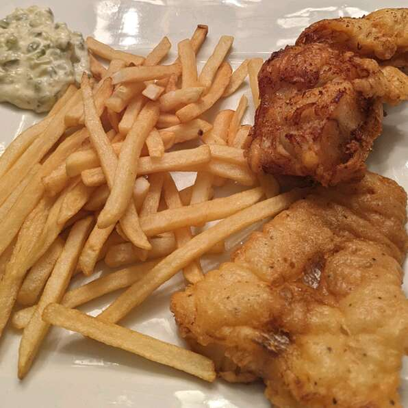

Fish and Chips

Classic Fish and Chips
Simple fish and chips recipe for New England's favorite dish. Tastes great as-is or with malt vinegar, lemon, or tartar sauce.
This fish and chips recipe is very easy to make and also pretty fast. You will spend 10 minutes preparing it and 25 minutes cooking it!
Ingredient List:
4 large potatoes, peeled and cut into strips
1 teaspoon ground black pepper
1 quart vegetable oil for frying
Steps:
- Place potatoes in a medium bowl and cover with cold water.
- Mix together flour, baking powder, salt, and pepper in a separate medium bowl. Add milk and egg; stir until batter is smooth. Let stand for 20 minutes.
- Heat oil in a large pot or electric skillet to 350 degrees F (175 degrees C).
- Drain and pat dry potatoes. Fry in hot oil until tender, about 5 minutes; drain on paper towels.
- Dredge fish in batter, one piece at a time, and place in hot oil. Fry until golden brown or internal temperature reaches 145 degrees F (63 degrees C); drain on paper towels. Monitor oil temperature, increasing the heat as needed to maintain 350 degrees F (175 degrees C).
- Fry potatoes again in hot oil until crisp, 1 to 2 minutes; drain on paper towels.
- Enjoy!